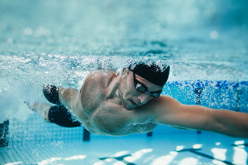

Ana Sayfa
Hakkımızda
İlgi Alanları
Fitness

Fitness , fiziksel uygunluk anlamına gelen, günlük hayatta daha çok zindelik ve fiziksel uygunluk için yapılan egzersizlerin bütünü için kullanılan terim.
Fitness ile vücut geliştirme (İngilizce: body building) farklı kavramlardır. Vücut geliştirme profesyonel olarak müsabakalarda yarışmak için kas geliştirme iken fitness, zinde olmak ya da uğraşılan spora özgü fiziksel gereksinimleri sağlamak için vücudu fiziksel olarak hazırlamaktır.
Unutulmaması gereken şey fiziksel uygunluğun genel yanılgının aksine sadece kas gruplarını geliştirmekten ibaret olmadığıdır. Farklı sporlar ya da amaçlara göre fiziksel uygunluk kavramı da farklı anlamlara gelebilir. Örneğin bir futbolcunun fiziksel uygunluk, yani fitness düzeyi yaptığı iş gereği çeviklik, çabukluk, aerobik ve anaerobik enerji sistemlerinin gelişmiş olmasıyla meydana gelir. Bunun yanı sıra bir sumo güreşçisinin de fiziksel uygunluk düzeyi, onun yaptığı iş gereği bir futbolcuya göre daha yağlı bir vücut gerektirir. Yani ilgilenilmek istenilen alana bağlı olarak fitness farklı anlamlar ifade edebilmektedir.
Fiyatı: 999 TL /Ay
CrossFit

Crossfit, özel bir antrenman şeklidir. Fitness hareketlerinin daha yoğun bir şekilde yapıldığı ve sürekli tekrar edildiği bir program da diyebiliriz. Crossfit, bölgesel bir çalışma şeklinden ziyade neredeyse vücudun tamamını çalıştırır. Bu sayede hızlı kalori yakımı sağlar ve kilo vermeye yardımcı olur.
Fiyatı: 1399 TL / Ay
Yüzme

Yüzme, bireyin tüm bedenini kol ve bacak hareketlerinden başka bir unsur kullanmadan su içinden ilerletmesini gerektiren, bireysel veya takımsal düzeyde gerçekleştirilen bir yarış ya da antrenman sporudur. Bu spor, yüzme havuzlarında veya açık suda (ör. deniz ya da göl içinde) icra edilmektedir. Yüzme yarışı Olimpiyat oyunlarındaki en popüler spor türlerinden biridir[1] ve kurbağalama, sırtüstü, kelebekleme, serbest ve karışık olarak isimlendirilen stillerde bireysel düzeyde gerçekleştirilir. Takım müsabakalarında ise, dört yüzücü serbest yahut karışık (dört yüzücünün farklı stillerde sırasıyla sırtüstü, kurbağalama, kelebekleme ve serbest yüzmesi) stillerde yarışabilmektedir.
Fiyatı : 799 / Ay